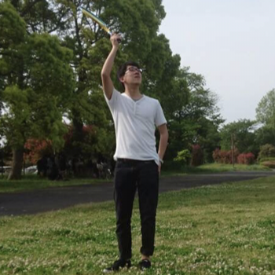

Mao's
Portforio

新堀 真雄
nibori mao
神奈川工科大学 情報学部 情報工学科。研究室でWebアプリケーション開発をする中、フロントエンドに興味を持ち、現在はフロントエンドエンジニアを目指し勉強中です。好きなことはバイクに乗ることです。
HTML/JS/CSS
使用期間：約1年
大学3年から現在までの約1年間で一番使ってきました。現在はプレーンのjavascriptとsassの学習を進めていて、このポートフォリオはプレーンのjavascriptとsassを使い、ライブラリなどは使用せずに作りました。
HTML/JS/CSS
jQuery
使用期間：約1年
Javascriptの学習を初めた時にほぼ同時に使い始めた最初のフレームワークです。現在では基本的な記述や、jQueryライブラリを併用して、複雑な動きや非同期処理などに使っています。
jQuery
React/Redux
使用期間：約2ヶ月
CustomBookmarkの作成に使用しました。大型Webページの開発ではありませんでしたが、学習のためReduxを用いて開発したため、基本的な使い方は心得ています。
React/Redux
GitHub
使用期間：約4ヶ月
ハッカソンでチーム開発を行う際に使い始め、現在は個人的な開発のバージョン管理に使用しています。
GitHub
Node.js
使用期間：約半年
バックエンド側を書く時に一番多く使っています。Expressを使って書くことが多く、ルーティング、フォーム処理、バリデーション、非同期通信、データベースの利用、セッションなどある程度のことはできます。
node.js
Ruby on Rails
使用期間：約3ヶ月
自分がバックエンドをやりたいのか、フロントエンドをやりたいのかまだ定まっていない頃に学習しました。現在では、熟練度はまだまだですがnode.jsと同じようなことはできます。
Ruby on Rails
PHP
使用期間：約半年
本格的にWeb開発の勉強を始める前から大学の講義で学んでいました。実際のWeb開発で使用したことはないですが、ルーティング、フォーム処理、データベースの利用はPHPで実装したことがあります。
PHP
SQL
使用期間：約半年
MySQL、PostgreSQLをそれぞれWebアプリケーション開発で使用しました。基本情報技術者試験の出題範囲程度の操作はできます。
SQL